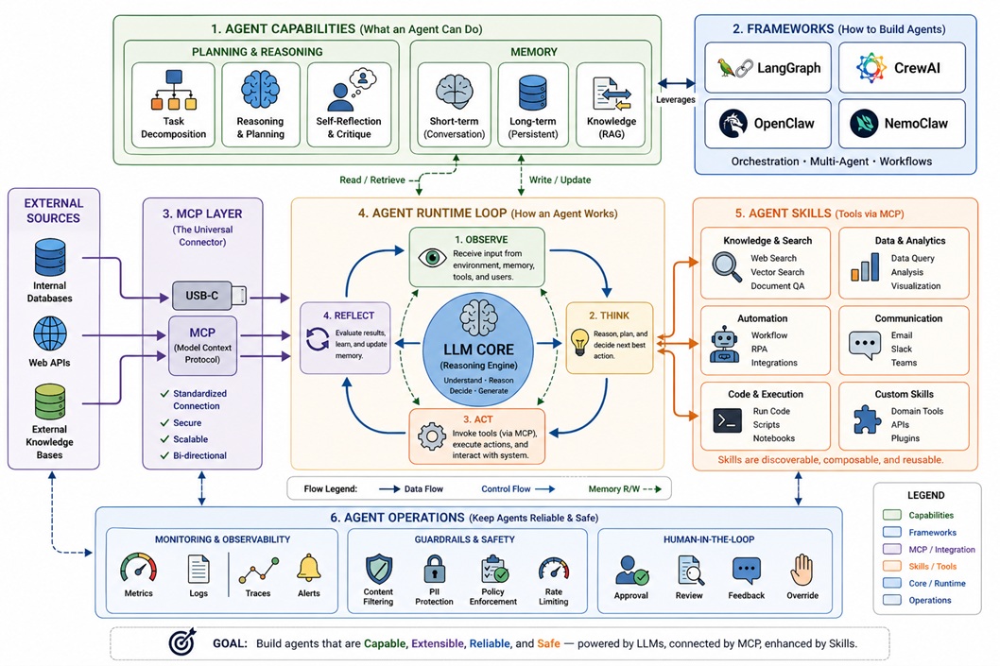

LLM 的基本原理：它先學會「怎麼說」，不等於先查證「是否真」
Agent 不是單一模型，而是模型、上下文、工具、記憶、流程與治理組成的工作系統。
現在的 AI Agent，如何組成一個可管理的系統？
前一頁把 Model、知識、工具與工作流程分開；這張架構圖把它們放回同一個系統中。Agent 的核心不是「更會聊天」，而是能在目標下反覆觀察、思考、行動與檢查，並在需要時使用外部工具。

圖中的主要元件
- LLM Core：負責理解、推理與生成。
- Memory：保存對話脈絡、長期資料或知識索引。
- MCP Layer：以標準化方式連接資料與工具。
- Agent Skills：提供可重複使用的任務方法與工具組合。
- Runtime Loop：觀察、思考、行動，再根據結果繼續或停止。
管理者真正要管的是什麼？
- 哪些資料可以讀取，哪些工具可以執行？
- 哪些動作需要人工核准或雙重確認？
- 如何留下日誌、追蹤錯誤與衡量成本？
- 什麼條件下必須停止、轉交給人或回復原狀？
因此 Agent 的能力越高，權限、監控、人工介入與驗收標準也要同步升級。
先記住：Agent 不是「有工具的聊天機器人」而已；它是一個可以在受控範圍內決定下一步的工作流程。